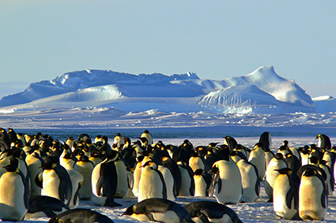
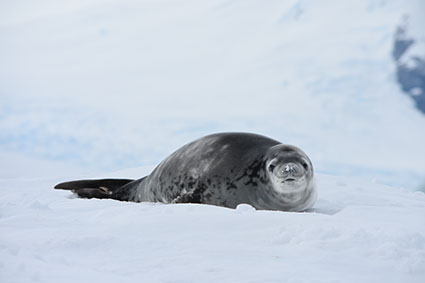
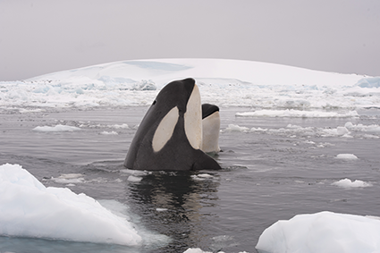

Carrossel de imagens
Clique nas setas para navegar.

Pinguins imperadores na Antártida, em 2014.
Crédito
: SIGGY NOWAK/
PIXABAY

Foca leopardo em meio a paisagem da Antártida, em 2016.
Crédito
: SADIE WHITELOCKS/
SHUTTERSTOCK.COM

Baleias orca, na Antártida, em 2020.
Crédito
: VLADSILVER/
SHUTTERSTOCK.COM
Pássaro Petrel branco, voando na Antártida, em 2022.
Crédito
: DAVID TIPLING/
NATURE PICTURE LIBRARY/
EASYPIX BRASIL